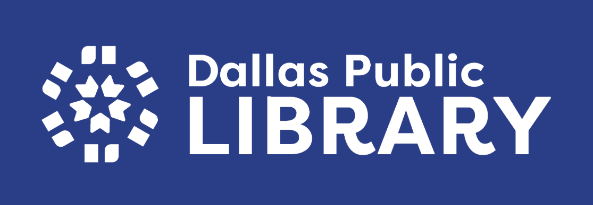

Here's what I've done...
Retrofit UX Design + Mobile Prototype
An AI-powered vintage shopping experience that curates trending, in-demand pieces based on social data and user style. I designed a clean, scrollable mobile interface and iteratively tested layout and tagging systems to reduce overwhelm and increase joy in secondhand discovery.
Responsive Redesign Accessibility + Frontend Dev
I redesigned the Dallas Public Library website to address major usability and accessibility issues. By simplifying navigation, modernizing the visual design, and making the layout fully responsive, I transformed a cluttered interface into a clean and intuitive user experience.
Personas and Storyboarding Field Research + Empathy Mapping
Conducted field research on CVS self-checkout kiosks to identify real user pain points. Synthesized insights into empathy-based personas and storyboards to visualize common frustrations. Highlighted how small UI choices can slow down or empower everyday users.
Accessible Components Inclusive Design + Component Redesign
A comparative analysis of radio button accessibility across Google Forms, macOS System Preferences, and Amazon Checkout. I proposed redesigned state models and a System Preferences mockup to better support mouse, keyboard, and screen reader users through more flexible interaction and feedback.
About Me
Frontend Developer & UX-Focused Engineer
I'm a Computer Science student at Brown University with a passion for clean, intuitive design and the technical craft behind it. Whether I'm building accessible web components or designing AI-curated interfaces, I care about aligning user needs with thoughtful, scalable solutions. I bring both creativity and precision to every project, blending design thinking with engineering execution.
Outside of work, I'm a film enthusiast, vintage fashion fan, and always curious about the next big interface idea.